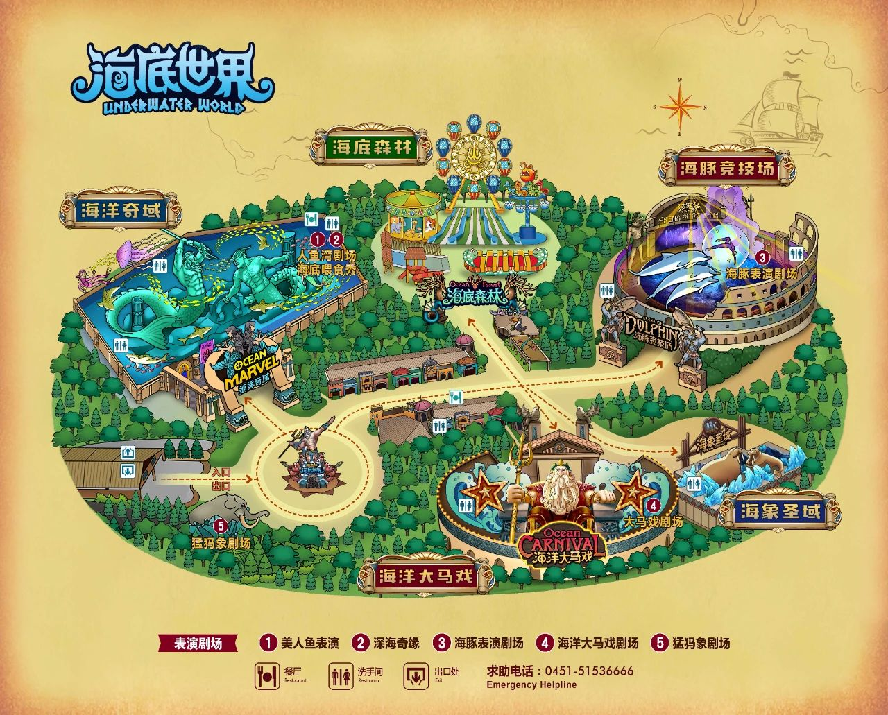
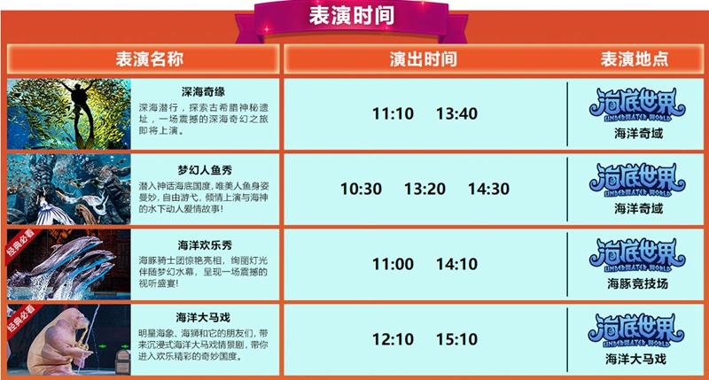

</head>
<!DOCTYPE html>
<html lang="en">
<head>
    <title>冬令营问题集中反馈</title>
</head>
<body></body>
</html>
<h1>波塞冬海底世界冬令营相关问题及解答（附地图及表演时间）</h1>
<h2>问：就餐处有没有桌椅</h2>
<h3>答：有</h3>
<h2>问：吃午饭附件有没有饭店</h2>
<h3>答:有商业街（部分可能不开门）</h3>
<h2>问：有没有热水供应</h2>
<h3>答：没有</h3>
<h2>问：有卫生间吗有多少个</h2>
<h3>答：有整体有22个</h3>
<h2>问：场内有没有供热</h2>
<h3>答：有但是部分户外走廊没有</h3>
<h2>问：有没有放免费衣服的地方</h2>
<h3>答：没有免费放衣服的地方</h3>
<h2>问：有没有现成的午饭</h2>
<h3>答：没有现成的午饭</h3>
<h2>问：有没有观光车</h2>
<h3>答：现在没有但是夏天有</h3>
<h2>问：停车场离场内远吗</h2>
<h3>答：不远但停车场很大大概需要走10分钟</h3>
<h2>问有没有可以放物品的地方</h2>
<h3>答：有收费寄存处小件5元大件10-20元</h3>
<h2>问：场馆内有没有互动环节</h2>
<h3>答：有</h3>



<footer>
    <p>&copy; 2023 冬令营.是博文吖.</p>
  </footer>